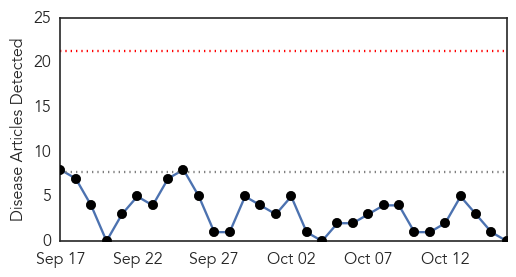
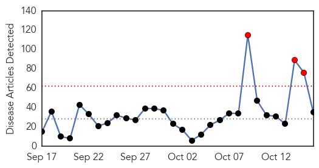

West Nile Virus
30-Day Web Trend
0 alerts, 0 warnings

30-Day Twitter Trend
0 alerts, 0 warnings

Article Locations

Article Confidences

Top Articles:
-
No articles found for Oct 16, 2015
Top Tweets:
-
No tweets found for Oct 16, 2015
Ebola
30-Day Web Trend
3 alerts, 0 warnings

30-Day Twitter Trend
2 alerts, 0 warnings

Article Locations

Article Confidences
Top Articles:
- 1.000
- How Pauline Cafferkey's Ebola relapse tears up everything doctors thought they knew
- 1.000
- Genomic analysis confirms sexual transmission of Ebola virus in Liberia
- 1.000
- Ebola Outbreak: 3 Things We Needed to Learn
- 1.000
- Research: Ebola Persists In Semen For Up To Nine Months
- 1.000
- UK Ebola Patient Relapses Nine Months Later; Proves How Little We Understand Virus
- 0.999
- Two new Ebola cases in Guinea show virus still spreading
- 0.999
- Ebola Virus Can Survive for 9 Months in Male Survivors
- 0.999
- Two new Ebola cases in Guinea confound hopes of end to outbreak
- 0.999
- 2 New Cases Of Deadly Virus In Guinea, World Health Organization Says
- 0.999
- Ebola May Stay in Survivors' Semen for Many Months
- 0.999
- Sexual transmission of Ebola possible after more than 179 days of disease onset
- 0.998
- Ebola outbreak may enter third year after new cases in Guinea
- 0.998
- Two new cases of Ebola in west Africa
- 0.998
- UK Ebola 'relapse' case takes virus specialists to uncharted waters
- 0.998
- Rwanda Airport Resumes Automated Clearance After Ebola Scare
- 0.997
- Ebola Virus Can Survive In Semen For Months, But Cases Are Rare
- 0.997
- The lingering symptoms of Ebola survivors
- 0.997
- Two New Cases Of Ebola Reported In Guinea
- 0.997
- Two new Ebola cases found in Guinea, dashing hopes
- 0.997
- Ebola lingers in semen for nine months
- 0.994
- UK Ebola "relapse" case takes virus specialists to uncharted waters, Others news, Health News, AsiaOne YourHealth
- 0.994
- What Happens When You Survive Ebola
- 0.992
- mBiosphere: Many viruses, one treatment: toward making a pan-filovirus antibody therapy
- 0.987
- Ebola in Semen Lives On
- 0.987
- Afropages : ebola-outbreak-update-2-new-cases-of-deadly-virus-in-guinea-world-health-organization-says
- 0.979
- British Ebola nurse now ‘critically ill’
- 0.979
- Chinese Ebola vaccine "safe and responsive" so far: Sierra Leonean official
- 0.979
- Chinese Ebola vaccine "safe and responsive" so far: Sierra Leonean official - Xinhua
- 0.974
- UPDATE 1-Two new Ebola cases in Guinea, WHO states
- 0.914
- British nurse Cafferkey hospitalized with Ebola virus relapse.
- 0.822
- New Ebola fight for Blantyre health centre nurse Pauline Cafferkey
- 0.757
- Health care worker gown, glove procedures key to contamination risks
- 0.669
- ‘Africa should invest in own innovations’
- 0.666
- GIZ Demonstrates Commitment to Boosts Salone Government Recovery Plan
- 0.531
- The most from the coast
Top Tweets:
- 0.933
- “This isn’t a recurrence of Ebola...it's a meningitis-like syndrome...a result of the lingering of Ebola virus" http://t.co/xEwMUbCJVy
- 0.850
- The Aftermath Of Ebola: Confirmed Sexual Transmission Of Viral Disease ... - Medical Daily http://t.co/4dNL1XEylz ebola EVD
- 0.780
- Ebola in West Africa - CDC’s Role in Epidemic Detection Control and Prevention http://t.co/NCSapI1Vho
- 0.771
- Two new Ebola cases in Guinea WHO says - Reuters UK http://t.co/8xZlslZmfd ebola EVD
- 0.730
- Two new Ebola cases have been reported from Guinea - in Conakry and Forecariah
- 0.710
- Ebola Outbreak: 3 Things We Needed to Learn - Motley Fool http://t.co/1WKfSjvWCK ebola EVD
- 0.703
- Two new Ebola cases found in Guinea dashing hopes - Yahoo News http://t.co/NV9dnnJ4WA ebola EVD
- 0.703
- Two new Ebola cases found in Guinea dashing hopes - Yahoo News http://t.co/MmsXuTmRU8 ebola EVD
- 0.703
- Two new Ebola cases found in Guinea dashing hopes - Yahoo News http://t.co/BnD9bNVVuZ ebola EVD
- 0.688
- New Ebola vaccine is tested on Spanish volunteers - euronews http://t.co/kK0r3cpYGX ebola EVD
- 0.686
- RT: Two new Ebola cases have been reported from Guinea - in Conakry and Forecariah
- 0.670
- RT: @bakarelawal talks about how took off during the Ebola outbreak in Nigeria at the SMHMasterclass…
- 0.630
- An Ebola Halloween Costume Is A Not Good Very Bad Seriously-Don't-Even ... - Bustle http://t.co/JfN4HdnbR8 ebola EVD
- 0.558
- Tracy Morgan: 'I'm now 100% Ebola-free!' - USA TODAY http://t.co/m2qaoBWFDr ebola EVD
- 0.531
- Ebola un virus encore plus redoutable qu'imaginé http://t.co/NS59jcA1tc
- 0.525
- Missionary doctor who was nearly killed by ebola to speak in Tulsa - Tulsa World http://t.co/Gbe6Lnd70f ebola EVD
- 0.522
- According to 2 new cases of Ebola have been reported in Guinea. This comes after two weeks with no new cases http://t.co/NEKHP2UCtf
- 0.510
- Ebola study finds women in Guinea who appear immune to the virus http://t.co/hbkOABurUZ